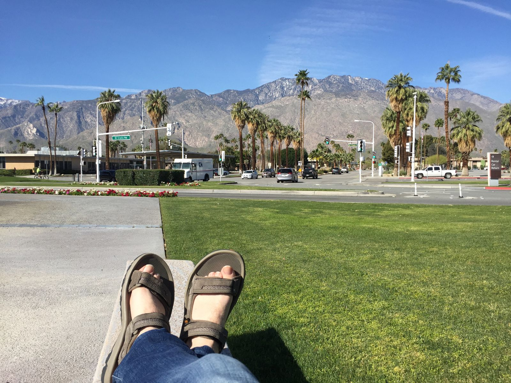
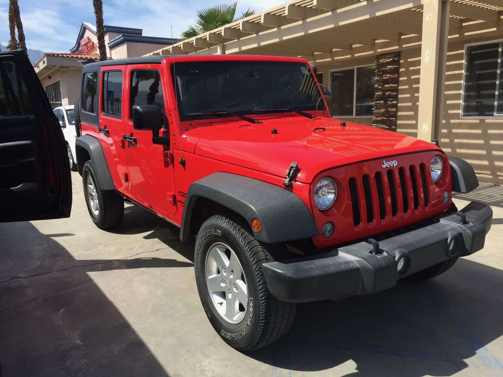
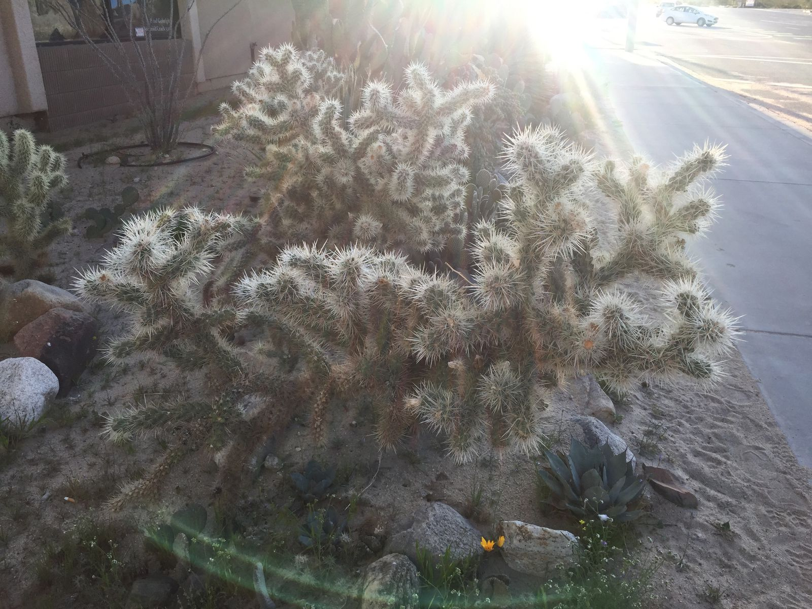

Landing in Palm Springs
I landed at Palm Springs airport a few hours before my mother and her partner. We're to spend a few days visiting Joshua Tree National Park and the Palm Springs area before I begin my solo journey up the Pacific Coast Highway.
Landing in Palm Springs was wonderful. The weather was in the mid 70's and it was very sunny. The airport itself is half outdoors, even the area past security. My checked bag was at the luggage carousel well before I was. Because it's a small airport, it's walking distance from the street and from a dog park.

It got progressively warmer. First I put on my flip flops. Then I got out my hat. Then I applied some sun screen. Lastly I made my way to the dog park to see if I could find some shade.
I don't actually have any pictures of the dogs because I was already getting enough stares showing up without a dog. I read in the park for a few hours and only two dogs tried to pee on me. The first one was very close, but I wised up when the second one came around. OK, the first dog tried to pee on me three times.
When my mother and David landed, the line for Avis rental car was hours long. They ditched their reservation and went with a local place. We ended up with a red jeep—pretty fun for this kind of trip.

After mistakenly getting lunch at The Palms Café instead of Palm Greens Café (it was pretty good, though not what we expected) and getting groceries at the local Whole Foods (plus a fresh fruit smoothie since I was a zombie having been up for twelve hours since 3:30am) we made our way to Joshua Tree. Around the corner from our Airbnb on the way to dinner, I came across this wonderful little cactus plant, shown below. It was a mesmerizing plant, so I took a picture. I later learned that it is the Teddy Bear Cholla (pronounced "choy-ya") Cactus, but more on them later.
